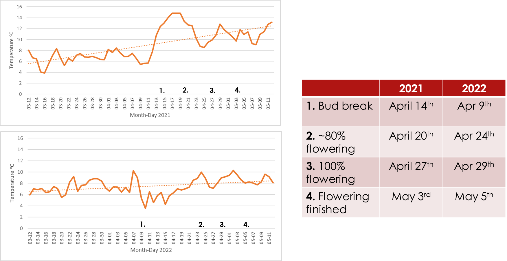
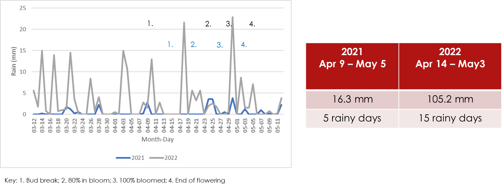

Oregon grape - seasonal variations
Reading time: <1 minute
Seasonal Variations: 2021 versus 2022
Phenology is the study of how the timing of events in a plant’s life cycle, such as bud burst, flowering, and fruiting, is affected by seasonal and environmental changes. It is an important field of study for understanding how plants respond to changes in their environment, and can provide insights into how ecosystems may be affected by climate change. 1
In this post, we summarize some of the key weather differences in summer 2021 versus 2022, and how this impacted the phenology of the Oregon Grape plans at our study site.
Data collection
Weather data collected continuously with Acurite Atlas weather station
Time lapse photography
2021: pictures taken every minute from sunrise to sunset
- Camera 1 - April 20th to October 16th
2022: pictures taken every 15s from sunrise to sunset
- Camera 1 - April 3rd to May 4th
- Camera 2 - April 12th to April 26th
Video
- 2021 only: video capture of 4 minutes out of every 5 from peak blooming to end of flowering
Phenology

Temperature trends
Rainfall

Bee counts
Best estimates of bee visits to the Oregon grape patch were derived from the time-lapse and video data. Overall similar numbers of bees came to feed both years despite quite varying weather patterns.
Summary
Footnotes
This introduction was generated using ChatGPT↩︎